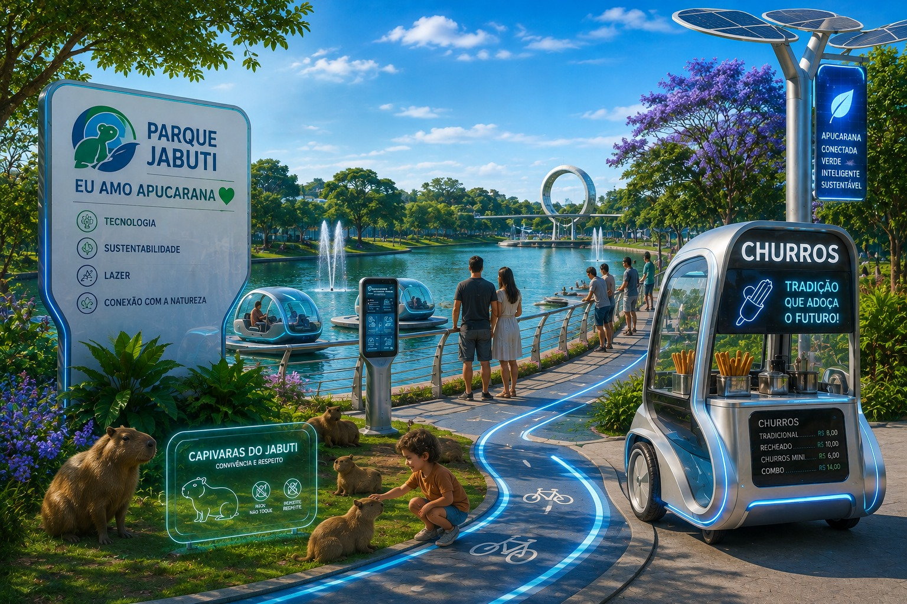
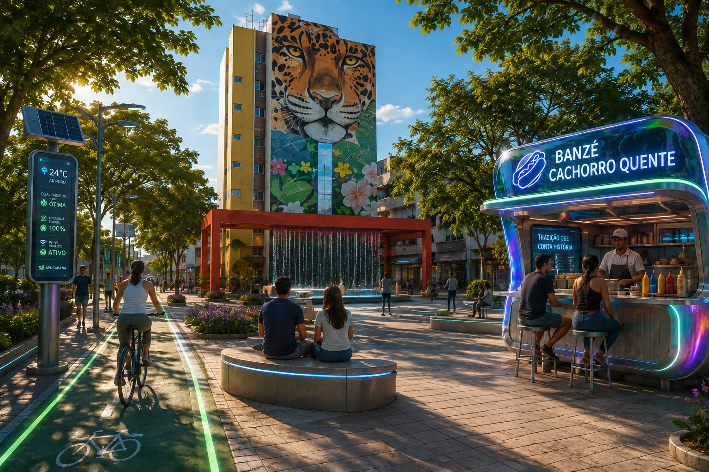
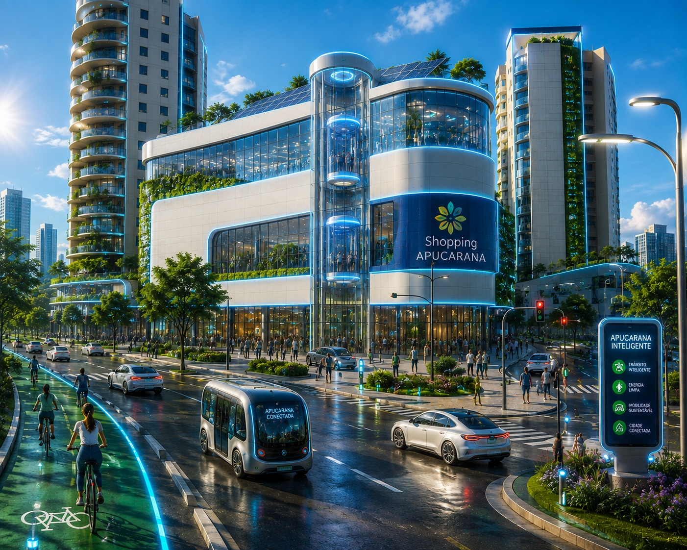

APUCARANA 2087

PISTA 3 KM · HOLO-RITMO ATIVO
EU ♥ APUCARANA

CORÔA SOLAR ARTICULADA
MODO: CAPTAÇÃO MÁXIMA
MODO: CAPTAÇÃO MÁXIMA
TÚNEL DE BOAS-VINDAS
ILUMINAÇÃO RESPONSIVA
ILUMINAÇÃO RESPONSIVA

BANZÉ 3087
CACHORRO-QUENTE
RECEITA ORIGINAL · DESDE SEMPRE
RECEITA ORIGINAL · DESDE SEMPRE


CÚPULA DE VIDRO SOLAR
LUZ NATURAL: 92%
LUZ NATURAL: 92%